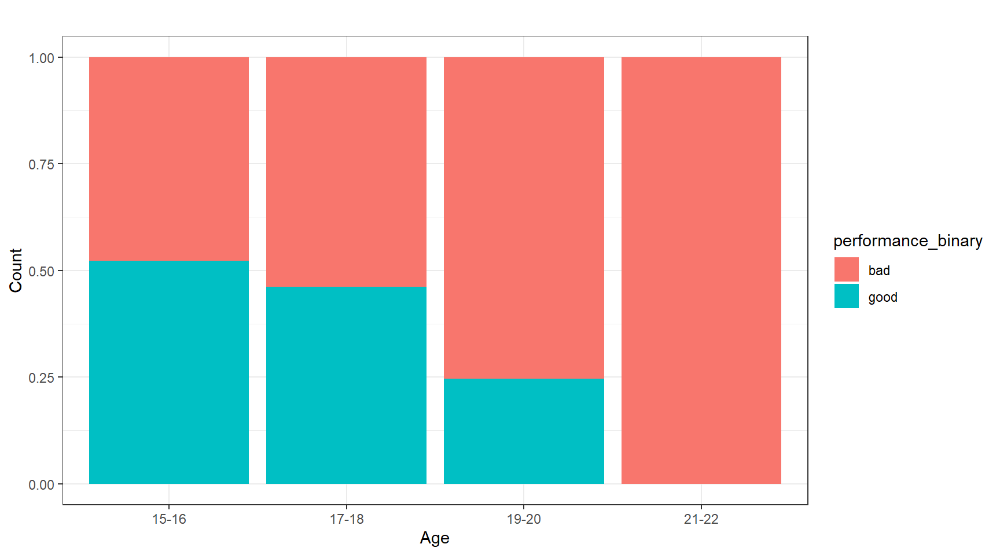
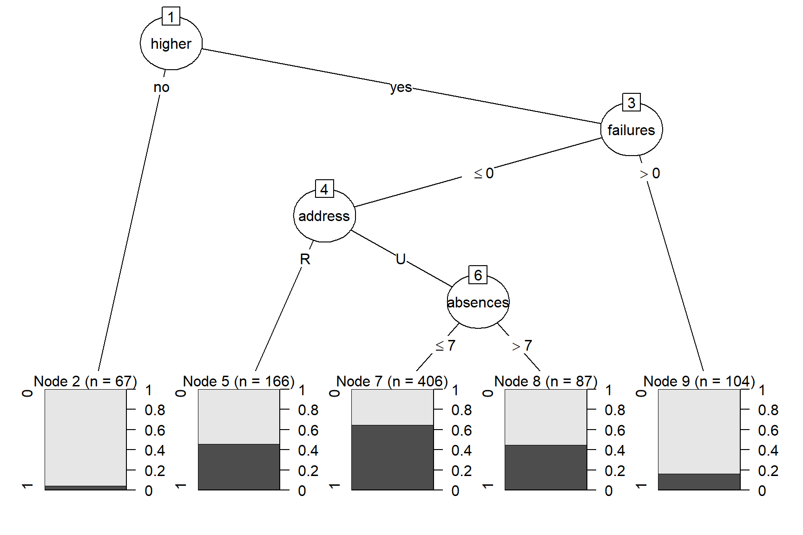
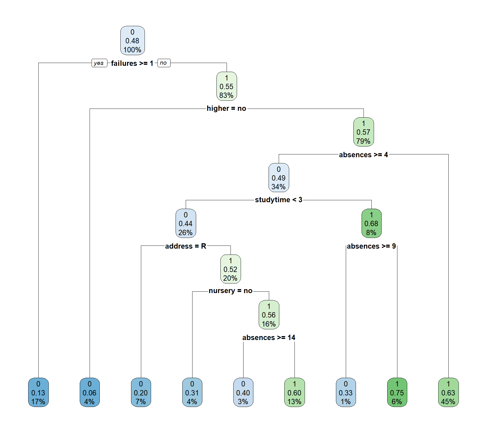
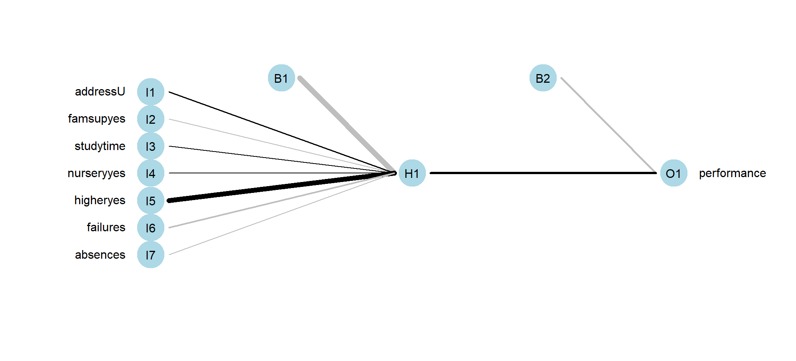

Code: R Programming - Appendix
Qualitative and quantitative factors alike affect student grades. We observed 1,044 students collectively from three terms of math and language arts classes of a Portuguese secondary institution to determine which of these factors is directly influenced by performance. Student grades were tallied over the three terms, from which performance was bisected by the median and binarized into two classes of 0 and 1 (“bad”, “good”, respectively). The dataset was further subjected to an 80:20 train-test split ratio to evaluate the model performance of data outside the training set visa vie implementation of six algorithms. The C5.0 and CART models produced accuracy scores of approximately 63%; whereas logistic regression and random forest models performed approximately 1% lower in terms of accuracy. Implementation of Naïve Bayes classification in conjunction with the neural network model yielded more accurate results of 65% and 69%, respectively. We discuss other metrics like error rate and precision, and note that each model, when cross-validated, has its own limitations that may inhibit or facilitate the prediction of student performance holistically.
Keywords: student performance, machine learning, ensemble methods, data mining
Predicting student performance closes the gap between socio-economic status and other external factors in one secondary educational institution, setting a precedent via proxy model for others to follow suit. The 2018 Program for International Student Assessment (PISA) found that “socio-economic status was a strong predictor of performance in reading, mathematics and science in Portugal. In Portugal, advantaged students outperformed disadvantaged students in reading by 95 score points in PISA 2018” (The Organisation for Economic Co-operation and Development [OECD], 2018). We aim to set a precedent for repeatability, allowing for subsequent iterations of our modeling techniques.
Our goal was to measure the impact of socio-economic factors on student performance from which we would select a viable predictive model. We sourced our publicly available dataset from the UCI Machine Learning Repository (Dua, 2019) as two separate .csv files representing Math and Portuguese courses from schools of secondary education. We merged the two groups into one master “student_file.csv” file in R (R Core Team, 2020), ensuring that the dataset had no missing values; this provided us a total of 1,044 rows and 33 columns of observations. Rather than sampling the data, we chose the entire population for our ensuing exploratory data analysis, thereby allowing us to pre-emptively eliminate selection bias. Our preliminary review consisted of evaluating absences from school by age, relying on attendance to provide an initial read on overall student performance. Though we identified 480 outliers in absences, we persisted in building an inclusive model of performance; decidedly, school attendance was not a reliable target for performance. On the other hand, the following descriptive statistics provided important information about the overall distribution. Whereas the minimum student age was 15, the mean, and median were both approximated at 17, suggesting a normally distributed dataset. Performance itself was categorized into “good” if the students’ grades were above the median, and “bad” if they were below. From here, we were able to determine performance by age and gender. Figure 1 shows the normalized age group by performance.
Figure 1
Age Group by Performance: (“Good” or “Bad”) - Normalized

Note. This normalized histogram assuages the comparison of performance across age groups, attributing the highest grades (248 of them) to 15–16-year-olds.
Six of the ensuing models were created with these predictor variables: address, family support, and study time. Nursery school, higher education, failures, and absences were presented as well for a total of seven. Logistic regression retained only the predictors of study time and absences.
The C5.0 model only utilizes four of the variables for the four decision nodes. Figure 2 illustrates that the root node splits for whether the student is interested in higher education. Students who are not interested in higher education immediately terminate to the leaf node two which contains 67 records and has a low likelihood of performing well. The students interested in higher education branch to the next decision node which splits by students who have failed a class previously and students who have had no previous failures. Students who had at least one previous failure branch to leaf node nine, which represents 104 records with a low chance of performing well. The students who had not failed a class branch to the address decision node. If the student has a rural address, the branch terminates to leaf node five, which is comprised of 166 records and has a moderate likelihood of performing well. Students with urban addresses branch to the final decision node for absences. However, students with more than seven absences terminate at the leaf node (consisting of 87 records) where there is a moderate chance of performing well. Students with seven or less absences terminate at leaf node seven (406 records), the highest likelihood of performing well.
Figure 2
C5.0 Decision Tree Predicting Student Performance

The resulting decision tree (Figure 3) has one root node, seven decision nodes, and nine leaf nodes. The root node begins with the “failures” variable, immediately relegating students with one or more failures to the first leaf node. These students make up 17% of the data set; 13% have a high-performance value, strongly likening a student’s previous class failures to continued poor performance. The next decision node splits based on student interest in higher education, with those not interested in higher education terminating to the second leaf node. They make up 4% of the data set; 6% of these students have a high-performance value, demonstrating that lack of interest in higher education is a strong indicator for likelihood of low performance. Another decision node splits students by address, with rural addresses terminating at the third leaf node. These students make up 7% of the data set and 20% of them have a high performance, making address another strong indicator of student success.
Figure 3
CART Decision Tree Predicting Student Performance
 Note. After evaluating this model with the test data set, the accuracy is determined to be 63.55%.
Logistic Regression was selected as the regression model of choice for this study due to performance being a binary response. The logistic regression equation takes the parametric form of the logistic regression model:
\[{p}(y) = \frac{\text{exp}(\beta_0+\beta_1x_1+\beta_2x_2+\cdot\cdot\cdot+\beta_px_p)}{1+\text{exp}(\beta_0+\beta_1x_1+\beta_2x_2+\cdot\cdot\cdot+\beta_px_p)}+\varepsilon\] Study time and absences are used to predict performance using this descriptive form:
\[\hat{p}(\textit{performance}) = \frac{\text{exp}(b_0 + b_1(\textit{study time}) + b_2(\textit{absences}))}{1+\text{exp}(b_0 + b_1(\textit{study time})+b_2(\textit{absences}))}\] Plugging in the coefficients from our training data we have: \[\hat{p}(\textit{performance}) = \frac{\text{exp}(-0.589 + 0.365(\textit{study time}) -0.052(\textit{absences}))}{1+\text{exp}(-0.589 + 0.365(\textit{study time})-0.052(\textit{absences}))}\] The regression coefficient for absences is -0.052. By calculating \(e^{-0.052} = \small{0.949}\), we find that for every additional day of absence, the student’s performance is 5.2% less likely to be improved (Larose, 2019, p. 190). Herein, the p-values of study time (0.0000194) and absences (0.000273) were statistically significant at α = 0.05, thereby eliminating the possibility of omitting these variables from this model. When evaluated against the test data set, the accuracy for the logistic regression model was determined to be 62.53%.
The Random Forest ensemble classification method was selected to complement the CART and C5.0 decision trees. Since the data set is relatively small, the random forest contains 100 trees. Once the branching structure of the trees is finalized, the algorithm itself classifies the “records in the original training data set. Every record in the data set is given a classification by every tree. Since these classifications are highly unlikely to be unanimous for all records, each classification is considered a ‘vote’ for that particular target variable value. The value with the largest number of votes is deemed the final classification of the record” (Larose, 2019, p. 91). When evaluated against the test data, accuracy was determined to be 62.62% with a sensitivity of 80.21% and a specificity of 48.31%.
Multiple Naïve Bayes models were created and evaluated utilizing different predictor variables. However, the fourth iteration of the Naïve Bayes classification model contained the strongest accuracy in this study. Our basis for this approach hinges on Bayes Theorem:
\[p(X^*) = \frac{p(Y=y^*)p(Y=y^*)}{p(X^*)} \] where x and y are the posterior probabilities (Larose, 2019, pp.113-114). The resulting model showed a higher likelihood of receiving high grades for students with urban addresses, support from family, had attended nursery school, and expressed interest in pursuing higher education. Additionally, fewer absences and fewer previous class failures increases the likelihood of receiving a high grade. The results for study time were uninformative in this model. When evaluating the Naïve Bayes model with the test data set, the accuracy was found to be 64.95% with 90.62% sensitivity and 44.07% specificity.
This linear combination takes the following general form:
\[ net_j = \sum\limits_{i} W_{ij}x_{ij} = W_{0j}x_{0J}+W_{IJ}x_{Ij} +...+ W_{Ij}x_{Ij}\] Refining this for our model, we have:
\[ net_H = \sum\limits_{i} W_{iH}x_{iH} = W_{0H}(1)+ W_{1H}x_{1H} + W_{2H}x_{2H} + W_{3H}x_{3H}+...+W_{7H}x_{7H}\] In neural networks represented by Figure 4, we found that family support has the highest weight, thereby having the most influence on student performance in this model.
Figure 4
Neural Network
 Note. The higher the family support, the more influence it has on the hidden layer H1, and in turn the performance O1.
To determine which model is the strongest, a full model evaluation was performed on all six models (Table 1). The evaluation measured accuracy, error rate, sensitivity, specificity, precision, and three F measure variations. Neural network has the highest accuracy, 68.80%, and lowest error rate, 31.20%, indicating it had the highest proportion of correct classifications and lowest proportion of incorrect classifications. This model also had the highest precision rate, 63.34%, which signifies the highest proportion of predicted positives to actual positives. Specificity is the proportion of negative records classified negatively, making it sensitive to false positives. The highest specificity, 66.10%, is found in the C5.0 model which shows that it would be a good model if false positives are a priority to avoid. Sensitivity shows the proportion of positive records classified positively and will lower as false negatives increase. Naïve Bayes has the highest sensitivity, 90.63%, making it a strong model if false negatives are more crucial to avoid than false positives. The final evaluation measures conducted for this study were three F scores, which combine precision and specificity weighted into one measure. The neural network model has the highest \(\small{F_1}\), 71.82%, and \(\small{F_{0.5}}\), 66.48%, while Naïve Bayes has the highest \(\small{F_2}\), 81.01%. Since the study does not have disadvantages associated with either false positives or false negatives the neural network model is determined to be the strongest option due to its high accuracy and precision.
Table 1
Model Evaluation Table for Student Performance
| Evaluation Measure | C5.0 | CART | Logistic Regression | Random Forest | Naïve Bayes | Neural Network |
|---|---|---|---|---|---|---|
| Accuracy | 0.630841 | 0.635514 | 0.625301 | 0.626168 | 0.649533 | 0.687952 |
| Error rate | 0.369159 | 0.364486 | 0.374699 | 0.373832 | 0.350467 | 0.312048 |
| Sensitivity | 0.593750 | 0.770833 | 0.605528 | 0.802083 | 0.906250 | 0.829146 |
| Specificity | 0.661017 | 0.525424 | 0.643519 | 0.483051 | 0.440678 | 0.557870 |
| Precision | 0.587629 | 0.569231 | 0.610127 | 0.557971 | 0.568628 | 0.633397 |
| \(F_1\) | 0.590674 | 0.654867 | 0.607818 | 0.658120 | 0.698795 | 0.718172 |
| \(F_2\) | 0.592516 | 0.719844 | 0.606442 | 0.737548 | 0.810056 | 0.780880 |
| \(F_{0.5}\) | 0.588843 | 0.600649 | 0.609201 | 0.594136 | 0.614407 | 0.664787 |
We hereby recommend the neural network model for repeated experiments of this magnitude and caliber for its propensity to deliver reliable results based on the metrics presented herein. Selecting different school subjects and tuning the hyperparameters may improve accuracy and precision; notwithstanding, this model has proven useful in identifying outside factors to student performance, allowing schools to more equitably aide student success.
Cortez, P., & Silva, A. (2008). Using data mining to predict secondary school student performance (pp. 5-12). EUROSIS.
Dua, D., & Graff, C. (2019). UCI Machine Learning Repository. University of California, School of Information and Computer Science.Larose, C. D., & Larose, D. T. (2019). Data Science Using Python and R. Wiley.
R Core Team. (2020). R: A language and environment for statistical computing (Version 4.0.3) [Computer software].